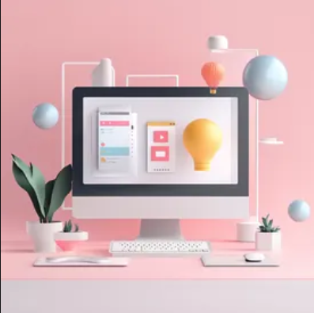
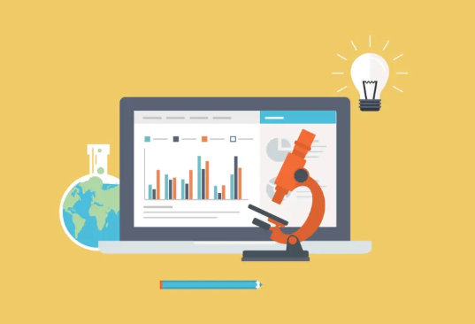
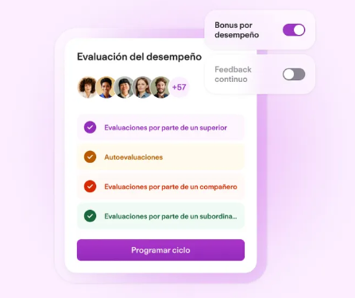

Pruebas de usabilidad
Se pide a usuarios reales que realicen tareas específicas en la interfaz. Se registran métricas como el tiempo de la tarea, la tasa de éxito y el número de errores.
La evaluación sumativa de interfaces es un proceso clave en el diseño de experiencia de usuario (UX) que se realiza para medir la efectividad y eficiencia final de una interfaz de usuario. Se enfoca en la calidad del producto terminado, a menudo comparándolo con estándares o productos de la competencia, y generalmente se lleva a cabo al final de una fase de diseño o desarrollo.
Se pide a usuarios reales que realicen tareas específicas en la interfaz. Se registran métricas como el tiempo de la tarea, la tasa de éxito y el número de errores.
Consiste en comparar la interfaz con productos de la competencia o con versiones anteriores del mismo producto, utilizando métricas de usabilidad clave.
Uso de herramientas analíticas (como Google Analytics) para estudiar el comportamiento real de los usuarios (clics, tasas de rebote, embudos de conversión, etc.) una vez que el producto está en vivo.
Se usan escalas estandarizadas (como el SUS - System Usability Scale, o el SEQ - Single Ease Question) para medir la satisfacción y percepción subjetiva de los usuarios.
Expertos en usabilidad evalúan la interfaz basándose en principios establecidos (heurísticas de Nielsen, por ejemplo). Aunque también se usa en evaluación formativa, una revisión final puede ser sumativa.